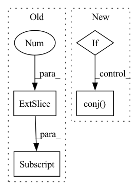

Pattern ID :24598
Before Change
jnp.conj(u)
@ Sinv
@ jnp.transpose(dv)
@ (jnp.eye(jnp.size(v[:, 1] )) - jnp.conj(v) @ jnp.transpose(v))
)
grad_a = dAv + dAu + dAs + dAcAfter Change
grad_a = dAv + dAu + dAs + dAc
if m > n:
grad_a += (du - jnp.conj(u) @ jnp.transpose(u) @ du) @ Sinv @ jnp.transpose(v)
elif m < n:
grad_a += (
jnp.conj(u)
@ Sinv
@ jnp.transpose(jnp.conj( dv) )
@ (jnp.eye(n) - jnp.conj(v) @ jnp.transpose(v))
)
// m=n do nothingIn pattern: SUPERPATTERN
Frequency: 3
Non-data size: 4
Instances Fragment ID: 76354941
Project Name: tencent-quantum-lab/tensorcircuit
Commit Name: 475d180d44b3590629c8b645ba71e67ce58041bc
Time: 2022-06-05
Author: kcanamgal@foxmail.com
File Name: tensorcircuit/backends/jax_ops.py
M Class Name: AnonimousClass
N Class Name: AnonimousClass
M Method Name: jaxsvd_bwd(2)
N Method Name: jaxsvd_bwd(2)
M Parent Class:
N Parent Class:
M File Name: tensorcircuit/backends/jax_ops.py
N File Name: tensorcircuit/backends/jax_ops.py
M Start Line: 32
M End Line: 63
N Start Line: 32
N End Line: 66
Before Change
ifc = torch.view_as_complex(ifc.unflatten(3, (self.frame_size, 2)))
if self.normalize_ifc:
ifc0 = ifc[..., -1]
ifc0[:, 0] = 1
ifc = ifc / (ifc0.unsqueeze(-1) + self.eps)
spec_f = spec_u.narrow(-2, 0, self.num_freqs)
numerator = torch.einsum("...nm,...m->...n", iRnn, ifc) // [B, C, F, N]After Change
spec_u = self.spec_unfold(torch.view_as_complex(spec))
iRnn = torch.view_as_complex(iRnn.unflatten(3, (self.frame_size, self.frame_size, 2)))
if self.cholesky_decomp:
iRnn = iRnn * iRnn.transpose(3, 4).conj()
ifc = torch.view_as_complex(ifc.unflatten(3, (self.frame_size, 2)))
if self.normalize_ifc:
ifc0 = ifc[..., -1]
ifc = ifc / (ifc0.unsqueeze(-1) + self.eps) Fragment ID: 76354937
Project Name: rikorose/deepfilternet
Commit Name: 5bec85aa4fd3c02ad92247d0f9e2a6903f9a8aae
Time: 2022-10-20
Author: Rikorose@users.noreply.github.com
File Name: DeepFilterNet/df/multiframe.py
M Class Name: MfMvdr
N Class Name: MfMvdr
M Method Name: forward(4)
N Method Name: forward(4)
M Parent Class: MultiFrameModule
N Parent Class: MultiFrameModule
M File Name: DeepFilterNet/df/multiframe.py
N File Name: DeepFilterNet/df/multiframe.py
M Start Line: 285
M End Line: 286
N Start Line: 292
N End Line: 295
Before Change
// A: Normalized IFC
ifc = Rss[..., -1]
ifc0 = ifc[..., -1]
ifc0[:, 0] = 1
ifc = ifc / (ifc0.unsqueeze(-1) + EPS)
// B: IFC via EVDAfter Change
if manual:
ifc0 = ifc[..., -1]
ifc = ifc / (ifc0.unsqueeze(-1) + EPS)
if cholesky_decomp:
A = A.matmul(A.conj() .transpose(-1, -2))
if inverse:
num = torch.einsum("...nm,...m->...n", A, ifc)
else: Fragment ID: 76354936
Project Name: rikorose/deepfilternet
Commit Name: 71013a3ff5bc0ff6435a10f2906e288588c36863
Time: 2022-10-31
Author: Rikorose@users.noreply.github.com
File Name: DeepFilterNet/df/multiframe.py
M Class Name: AnonimousClass
N Class Name: AnonimousClass
M Method Name: compute_ideal_mvdr(3)
N Method Name: compute_ideal_mvdr(1)
M Parent Class:
N Parent Class:
M File Name: DeepFilterNet/df/multiframe.py
N File Name: DeepFilterNet/df/multiframe.py
M Start Line: 405
M End Line: 468
N Start Line: 435
N End Line: 507